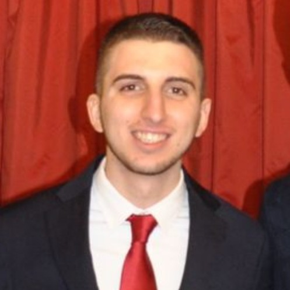

Best paper presented by a young researcher

PhD Student · University of Turin
I study how eye-tracking signals and language models can jointly reveal reading difficulty and cognitive markers, with a focus on readability, text simplification, and dementia-related linguistic patterns.
My research focuses on the intersection of eye-tracking and natural language processing (NLP), with particular emphasis on employing eye movement data to evaluate text readability and support automatic text simplification. A complementary line of work explores the application of a paired perplexity strategy using small-scale language models to identify linguistic markers of cognitive decline, particularly for categorizing dementia and Alzheimer’s disease patients.
Highlights and recognitions.
Best paper presented by a young researcher
Education and academic partnerships.
Selected work and recent papers.